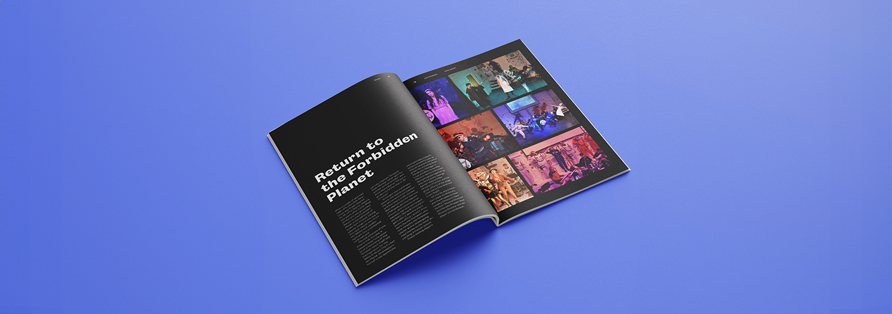

The Phoenix Annual magazine
The Phoenix magazine is an annual magazine for Prior Park college, Bath. This project has been a cornerstone of my design work for several years, allowing me to combine creativity, collaboration, and technical skill to produce a publication that captures the essence of the school community each year.

Undertaking the project
The Phoenix is more than just a school magazine; it's a celebration of the vibrant life at Prior Park School. Each issue showcases the achievements, stories, and talents of the students and staff, providing a lasting record of the school year. The magazine covers a wide range of topics, including academic highlights, sports achievements, artistic endeavors, and special events.
My Role in the Project
As the lead designer, my responsibilities include:
- Concept Development: Each year starts with brainstorming sessions to determine the theme and visual style of the magazine. I collaborate closely with the editorial lead to ensure the design aligns with the content and the overall message we want to convey.
- Layout Design: Using Adobe InDesign and other design tools, I create the layout for the entire magazine. This involves organizing articles, photographs, and illustrations in a visually appealing and coherent manner.
- Typography and Imagery: Selecting the right fonts and images is crucial to creating a polished and professional look. I ensure that the typography complements the magazine's tone and that the images are high quality and appropriately placed.
- Editing and Proofreading: Attention to detail is essential. I work with the editorial team to proofread all content, ensuring there are no errors and that the layout is perfect.
Challenges and Solutions
Designing the Phoenix magazine comes with its own set of challenges, each requiring creative solutions:
- Maintaining Consistency: With each new issue, it's important to keep the magazine’s look fresh while maintaining a consistent brand identity. I achieve this by evolving the design elements subtly each year.
- Balancing Content and Design: Ensuring that the design enhances the content without overpowering it is a delicate balance. I focus on clean, uncluttered layouts that make reading enjoyable.
- Meeting Deadlines: The school year is busy, and coordinating with various contributors can be challenging. Effective project management and clear communication are key to staying on schedule.
Final magazine